Breakthroughs in Layer-2 Scaling and Interoperability#
“The bitcoin protocol can encompass the global financial transaction volume in all electronic payment systems today, without a single custodial third party holding funds.” – Joseph Poon and Thaddeus Dryja, The Bitcoin Lightning Network, 2016
A blockchain is a shared record of payments. Think of it as a Python list of blocks, where each block is a list of transactions: signed instructions such as “move 5 coins from Alice to Bob”. Many computers, called nodes, keep copies of the list. A full node checks every transaction itself. So adding nodes adds copies of the work, not capacity. The whole network processes no more than one node can.
The chain itself is layer 1. A layer-2 system is built on top of it. It does most of its work elsewhere and uses the chain only as a court of last resort, so it keeps the chain’s security. The ideas below do this in four ways:
Payment and state channels. Two parties update a balance privately. The chain only judges disputes.
Child chains and rollups. These post commitments (short fingerprints of data) or compressed data to the chain, instead of having the chain execute everything.
Sharding. This splits the work among groups of nodes.
Data-availability sampling. This lets light clients, nodes that download only a short summary of each block, check that the data behind a block exists without downloading it.
Interoperability means moving value between different chains. Two of these tools, hash time-locks and light clients, also do that. Bridges, systems that move coins from one chain to another, that do without them have been the costliest failures in the field. Breakthroughs in Replicated Execution covers the hash time-locked contract itself, and Breakthroughs in Authenticated Data Structures the Merkle proofs and light clients that much of this page builds on.
The page uses a few terms throughout:
Alice and Bob are the honest parties. A cheater or attacker is anyone trying to take more than they are owed.
A hash function, here SHA-256, is like Python’s
hash(). But it returns 256 bits, and it is built so that nobody can find two inputs with the same output, or an input that gives a chosen output. Ifh = sha256(s), thensis the preimage ofh. Finding it by brute force takes about \(2^{256}\) guesses. Even \(2^{128}\) guesses is far more than every computer on Earth could make in the age of the universe.A digital signature is a value that only the holder of a secret key can produce for a given message. Anyone with the matching public key can check it. Changing one bit of the message makes the signature invalid.
An output is how Bitcoin stores coins. There are no account balances. Each output holds an amount and a small program, its script, that says what is needed to spend it, such as “a signature by Alice’s key”. A transaction spends some outputs and creates new ones. Each output can be spent only once, like a dict entry that is deleted when it is used.
A transaction is published when it is broadcast to the network, and confirmed, or on chain, once a block includes it. A transaction the parties hold but have not published is off chain. Every transaction pays a fee to the miner who includes it.
A lock time makes a transaction invalid before a given block height, the number of blocks so far. Bitcoin adds a block about every ten minutes. A relative lock time counts blocks from when the spent output was confirmed.
A smart contract is a program stored on a chain such as Ethereum. It has its own storage and can hold coins. Like a Python object, it runs a method when a transaction calls it, but nobody can change its code. Every operation and every byte of data costs gas, which is paid for in fees.
Every channel output here is a blockchainkit.vm.systems.script
program, judged by verify_script();
the contracts run on World.
Exact conventions and model boundaries lists where the models depart from deployed systems.
1960 – Reed and Solomon’s Polynomial Codes#
A communication line can lose or corrupt symbols. It needs redundancy:
extra symbols from which the damaged ones can be rebuilt. Reed and Solomon
found a code that tolerates as much damage as any code of its length and
rate can. A code’s length is the number n of symbols it sends, and its
rate is the fraction k / n of them that carry data.
The idea rests on a school fact. Two points fix a line, and three points fix
a parabola. In general, k points fix a polynomial of degree below k.
So send more than k points of the polynomial. Any k that arrive
rebuild it.
The arithmetic happens in a finite field. Here that means the integers
0, ..., p - 1 for a prime p, with every result taken % p. Adding,
subtracting and multiplying work as usual. Dividing by a nonzero a works
too: multiply by pow(a, -1, p). So algebra on polynomials works as it
does for real numbers, but values never grow and nothing is rounded.
The sender reads
kdata symbols, which are field elements, as the coefficients of a polynomial \(P\) of degree belowk.The sender evaluates \(P\) at
ndifferent points, withn > k, and sends thenvalues. This list is the codeword.The receiver takes any
kcorrect values and solves for the coefficients of \(P\). This step is interpolation. It gives back the data.
Why does it work? Two different polynomials of degree below k agree on
at most k - 1 points. Their difference is a nonzero polynomial of degree
below k, and such a polynomial has at most k - 1 roots. So any k
received values determine the polynomial, and two codewords differ in at
least \(n - k + 1\) places.
There are two kinds of damage:
An erasure is a symbol that is known to be missing.
An error is a symbol that is wrong, with nothing to say so.
A decoder can therefore fill in up to \(n - k\) lost symbols, and correct a wrong symbol at the price of two lost ones, as long as
In words, each error uses up twice as much redundancy as an erasure. The decoder must spend some of it finding where the error is.
Decoding errors efficiently took longer. Trying every possible set of
wrong positions is brute force, and the number of sets grows exponentially.
Berlekamp and Welch (1986) reduced the problem to linear algebra: solving a
system of linear equations, as in Gaussian elimination. The unknown is an
error-locator polynomial, whose roots are the positions of the errors.
With \(n = 2k\), any half of the n values rebuilds the data, which
is what data-availability sampling relies on.
Implementation: blockchainkit.channels.systems.reed_solomon.rs_encode(),
rs_recover() and
rs_decode() (Berlekamp-Welch),
over the integers modulo 65,537 by default. Codes are systematic: the data
are the polynomial’s values at 0, ..., k - 1, as in data-availability
schemes, rather than its coefficients, as in Reed and Solomon’s paper.
References: I. S. Reed and G. Solomon, Polynomial codes over certain finite fields, Journal of the Society for Industrial and Applied Mathematics 8(2), 300–304 (1960). DOI; L. R. Welch and E. R. Berlekamp, Error correction for algebraic block codes, US Patent 4,633,470 (1986).
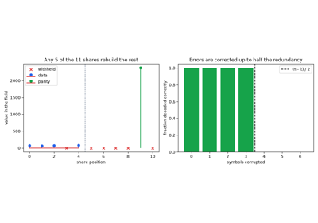
Reed-Solomon codes: recovering lost and corrupted symbols (1960)
2013 – Spilman and Hearn’s One-Way Micropayment Channels#
Suppose you pay a few satoshis per second for a service. A satoshi is the smallest unit of bitcoin, \(10^{-8}\) BTC. With one transaction per payment, the fees cost more than the payments.
Jeremy Spilman described a channel that needs two transactions for any number of payments. It works like a bar tab. The payer first puts money in a box that needs both parties’ keys to open. Then the payer hands over a fresh IOU for each payment. Only the last IOU is ever cashed.
The payer builds a funding transaction. It locks the channel’s capacity, the most it can ever pay, in an output that only both parties’ signatures can spend. This is a 2-of-2 output.
Before publishing it, the payer gets the payee’s signature on a refund. The refund returns everything to the payer after a lock time. So a payee who vanishes cannot hold the coins hostage.
The payer publishes the funding transaction.
For each payment, the payer signs a new transaction from the funding output and sends it to the payee. It pays the payee a little more than the last one. Nobody publishes it.
To close the channel, the payee adds its own signature to the latest transaction (it countersigns) and publishes it.
The payee could countersign and publish any of them. But the last pays it
the most, so it publishes only that one. Mike Hearn implemented the scheme
in bitcoinj, a Java library for Bitcoin, the same year. For m payments,
only funding and closing reach the chain,
so the cost on chain stays the same however many payments are made. The scheme has two limits:
Money flows one way only, from payer to payee.
The payee must close before the lock time, or the payer can take everything back with the refund.
Implementation: blockchainkit.channels.systems.micropayment.SpilmanChannel,
whose funding output is a 2-of-2 Script checked by
verify_script(). The interpreter has
no OP_CHECKMULTISIG, so the two signatures are checked one after the
other. Before segregated witness, the refund signed a funding transaction
whose identifier could be malleated; the model has no malleability.
References: J. Spilman, Anti DoS for tx replacement, bitcoin-development mailing list (April 2013); M. Hearn, micropayment channels in bitcoinj (2013), and Contract, Bitcoin Wiki.
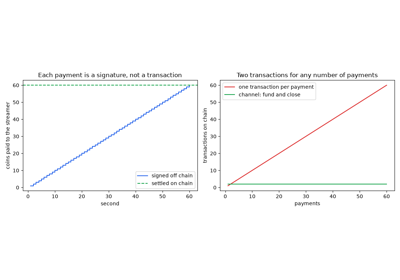
Spilman and Hearn’s one-way micropayment channels (2013)
2013 – Tier Nolan’s Atomic Cross-Chain Swaps#
Alice has coins on chain A and Bob has coins on chain B. They want to trade. Each wants the other to pay first, and neither chain can see the other to enforce the deal.
Tier Nolan’s protocol ties the two payments to one secret s, known only
to Alice. The same key opens both boxes, and opening one box shows Bob the
key. Each payment sits behind a hash time-lock: an output that pays the
recipient if they show a preimage of a given hash h, and refunds the
sender after a deadline.
Alice picks a random secret
sand computesh = SHA256(s). Only she knowss.Alice locks her coins on chain A to Bob behind
h, refundable to her at time \(T_A\).Bob sees this on chain A. He locks his coins on chain B to Alice behind the same
h, refundable to him at \(T_B\).Alice claims Bob’s coins on chain B. To do so she must publish
s.Bob reads
sfrom chain B and uses it to claim Alice’s coins on chain A.
Either both payments happen or neither does. This is what atomic means. The timeouts must be in the right order:
Alice must claim on B before \(T_B\), or Bob takes his coins back. So
sis public by \(T_B\) at the latest.Bob then needs time to use
son A before Alice can refund there.
Nobody can lose if
That is, Alice’s refund must open later than Bob’s, by at least Bob’s reaction time. With the timeouts reversed, \(T_A < T_B\), Alice could wait until \(T_A\), refund on A, and still claim on B.
Implementation: blockchainkit.channels.systems.swaps.AtomicSwap,
two htlc_locking() outputs whose
claims and refunds run through Script. Both chains share one block height,
and neither has fees or confirmation delays; the free option the protocol
gives Alice is left to the exercise.
References: T. Nolan, Alt chains and atomic transfers, Bitcointalk forum (May 2013).
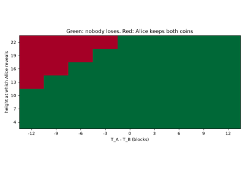
Tier Nolan’s atomic cross-chain swaps (2013)
2015 – Decker and Wattenhofer’s Duplex Micropayment Channels#
A Spilman channel pays one way and can be spent only once. Decker and Wattenhofer combined two of them, one per direction. Whenever one side ran dry, they reset the pair, re-funding both channels from the current balances.
Each reset leaves older pairs signed and publishable. Nothing punishes a party who publishes one. So the protocol must make sure the newest pair always reaches the chain first. An invalidation tree of time-locked transactions sees to that. It works like a race in which newer states always get a head start.
The funding output is spent by a chain of transactions that runs down a tree of depth
d. Each transaction spends its parent’s output and has a lock time. The channel pair hangs from the bottom.Each reset replaces a node of the tree with a copy whose lock time is \(\delta\) blocks lower, and builds a new branch below it.
Where an old and a new branch part, both spend the same parent output. The new branch becomes valid first, so it is confirmed first and spends that output.
An output can be spent only once, so the old branch can never confirm.
Lock times only go down, so a tree of depth d with s lock-time
values per level allows \(s^d\) resets before it runs out. It counts
down like a d-digit counter in base s. At worst every level still
has its highest lock time, and closing waits for up to
That is, each of the d levels can make the closing party wait
\((s - 1)\,\delta\) blocks. The paper also built a payment network from
these channels, routing payments over several hops (intermediate channels)
with hash time-locks.
Implementation: blockchainkit.channels.systems.duplex.DuplexChannel,
invalidation_locktimes() and
first_confirmed(). The channel
is a state machine without transactions or signatures. Lock times are
relative, counted from each parent’s confirmation, so closing takes their
sum; with absolute lock times a channel also has a fixed lifetime.
References: C. Decker and R. Wattenhofer, A fast and scalable payment network with Bitcoin duplex micropayment channels, Stabilization, Safety, and Security of Distributed Systems (SSS 2015), LNCS 9212, 3–18 (2015). DOI.
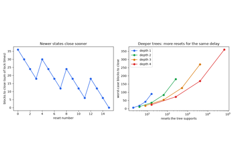
Decker and Wattenhofer’s duplex micropayment channels (2015)
2016 – Poon and Dryja’s Lightning Network: Revocation and Penalties#
An invalidation tree runs out of lock times, so a duplex channel allows only so many resets. Lightning stops old states from being published by deterrence instead. Publishing one costs the cheater everything. No lock time is used up, so a channel can be updated without limit.
Each party holds its own commitment transaction: a copy of the current balances, signed by the other party, ready to publish. It pays the counterparty at once, but its holder only after a delay. During that delay, the holder’s output can also be taken with a revocation key.
Alice and Bob each sign the other’s new commitment transaction.
Each hands over the secret behind its previous commitment’s revocation key. That old state is now revoked.
Suppose Alice later publishes a revoked commitment. Bob’s share is paid at once. Alice’s share is still waiting out the delay.
Bob, who is watching the chain, signs with the revocation key before the delay ends. He sweeps Alice’s whole balance.
The revocation key must be unusable until it is handed over, so it is split between the two parties. The keys here are points on an elliptic curve. All you need to know is this:
A public key is \(S = sG\): a fixed starting point \(G\), “multiplied” by a secret number \(s\). Like
pow(g, s, p), this is easy to compute from \(s\) and infeasible to undo.Points can be added, and \(sG + bG = (s + b)G\). So adding two public keys gives the public key of the sum of the two secrets.
\(q\) is the number of distinct multiples of \(G\), so secrets are added
% q.
The revocation key combines the holder’s per-commitment point \(S_n = s_n G\) with the counterparty’s base point \(B = b G\),
The public revocation key \(R_n\) is the sum of the two points, and its
secret \(r_n\) is the sum of the two secrets. The counterparty knows
only b and the holder only \(s_n\), so neither can sign with
\(r_n\) until the holder reveals \(s_n\). The paper also linked
channels into a network with hash time-locked contracts.
Implementation: blockchainkit.channels.systems.lightning.LightningChannel,
whose commitments, sweeps and penalties are Script spends of a 2-of-2
funding output and a revocable output. Per-commitment secrets are a hash
chain used backwards, as in Lightning’s shachain, so the counterparty
stores one secret. Script here lacks OP_CHECKSEQUENCEVERIFY: the delay
is checked by OP_CHECKLOCKTIMEVERIFY against the commitment’s age, and
the revocation key adds the points without the hashed tweaks that stop a
party from cancelling the other’s.
References: J. Poon and T. Dryja, The Bitcoin Lightning Network: Scalable off-chain instant payments, white paper (January 2016).
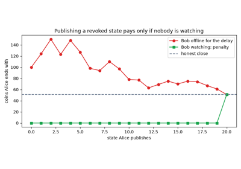
Poon and Dryja’s Lightning Network: revocation and penalties (2016)
2016 – BTC Relay: a Light-Client Bridge in a Smart Contract#
A contract on one chain cannot see another chain. So it cannot tell whether a payment there happened. BTC Relay, launched on Ethereum in 2016, ran a Bitcoin light client inside a contract.
Three Bitcoin ideas make this possible:
A block header is a short summary of a block. It includes the hash of the previous header, which links the blocks into a chain.
Proof of work: a miner must find, by brute force, a header whose hash starts with
difficultyzero bits. Each try succeeds with probability \(2^{-\text{difficulty}}\).A Merkle proof shows that a transaction is in a block. It is the list of hashes on the path from the transaction up to a root stored in the header, about \(\log_2\) (number of transactions) hashes long.
Relayers, who can be anyone, submit Bitcoin block headers to the contract.
The contract checks that each header links to a stored header and meets its proof-of-work target.
The contract follows the chain with the most cumulative work.
A user submits a Merkle proof that a Bitcoin transaction is in a block of that chain, with enough confirmations: blocks built on top of it.
The contract accepts the payment as real. This enabled trustless ether-for-bitcoin swaps.
A header whose hash needs difficulty leading zero bits takes
\(2^{\text{difficulty}}\) hashes on average, so a chain’s work is
This is the expected number of hashes needed to build the whole chain. Faking a Merkle proof means building a heavier chain of headers than honest Bitcoin miners do. So the relay is safe as long as no attacker can out-mine them. This is the light-client assumption of Nakamoto’s simplified payment verification: trust the heaviest chain of headers without checking every transaction.
Implementation: blockchainkit.channels.systems.relay.BTCRelay
on World, storing
BlockHeader objects mined
by mine_header() and verifying
MerkleTree proofs. The
teaching chain has no difficulty retargeting, so the relay demands a fixed
minimum difficulty instead, and relayers earn no fees.
References: J. Chow, BTC Relay, ConsenSys, github.com/ethereum/btcrelay (2016).
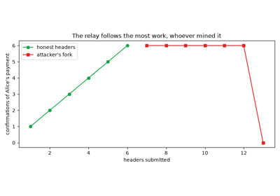
BTC Relay: a Bitcoin light client in an Ethereum contract (2016)
2017 – Sprites and General State Channels#
On a chain with contracts, a contract can judge a channel. It no longer has to be enforced by pre-signed transactions. The contract acts as a referee, and the state can be anything: balances, or the position of a game.
An adjudicator contract holds the deposits.
The parties sign successive numbered versions of the state, off chain.
Either party can submit the latest version to the contract.
The other party has a dispute period to answer with a newer version.
The contract settles on the highest version.
So publishing an old version gains nothing.
Sprites also shortened multi-hop payments. Alice can pay Carol through Bob, using two channels: Alice to Bob, and Bob to Carol. Each hop locks money, its collateral, behind the same hash time-lock. The lock’s deadline is its expiry.
In Lightning, a payment over
nhops locks amount \(a_i\) on hopiuntil an expiry \(\Delta\) later than the next hop’s. Each hop learns the preimage only when the next one claims, and needs time \(\Delta\) to claim in turn. Expiries thus grow towards the sender.Sprites added a global preimage manager, a contract where anyone can publish the preimage. Every hop settles by asking it whether the preimage was published by one common deadline. No hop waits for the next.
So collateral is locked for the same time on every hop,
Each term is an amount times how long it is locked. In Lightning the lock time shrinks hop by hop; in Sprites it is the same \(\Delta\) on every hop.
Implementation: blockchainkit.channels.systems.state_channels.StateChannel
and PreimageManager,
contracts on World, with
htlc_expiries(),
sprites_expiries() and
collateral_time(). The
adjudicator decides disputes by version number alone; Sprites and later
designs also let a party advance an application’s state on chain when the
other stops responding.
References: A. Miller, I. Bentov, S. Bakshi, R. Kumaresan and P. McCorry, Sprites and state channels: payment networks that go faster than Lightning, Financial Cryptography and Data Security (2019); arXiv:1702.05812 (2017).
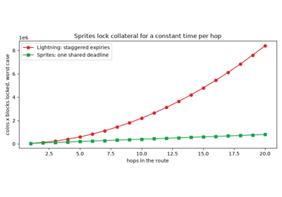
Sprites and general state channels (Miller et al., 2017)
2017 – Plasma: Child Chains with Exit Games#
Channels serve a fixed set of parties. Poon and Buterin’s Plasma moved whole chains off the main one.
An operator runs a child chain and collects its transactions into blocks.
The operator posts only each block’s root to a contract on the main chain, the root chain. The root is a single hash, a fingerprint of every transaction in the block. The contract cannot check the transactions behind it.
To withdraw, an owner exits: they prove ownership on the root chain and wait out a challenge period.
During that period, anyone may prove the exit invalid, which cancels it.
So coins stay safe because their owners can always exit.
In Plasma Cash (2018) every coin has a slot in each block’s sparse Merkle tree. That is a Merkle tree with one leaf for every possible coin, like a dict keyed by coin ID where most entries are empty. A coin’s history is then a chain of transfers, each proved by a Merkle branch. An exit names the coin’s last transfer, to the exiter, and the one before it. A challenger cancels it by showing
The first proves the exiter has already given the coin away. The second proves that the coin left the previous owner before the exiter’s transfer, so that transfer was a double spend: the same coin spent twice. The design has a weak point:
Exits only work while users can see the blocks.
An operator who withholds them can hide invalid transactions.
Then every user must exit, and the root chain may not have room for them all.
This is the data-availability problem: how to know that the data behind a commitment has really been published. Rollups later solved it by posting the data.
Implementation: blockchainkit.channels.systems.plasma.PlasmaChain
with sign_transfer(), on
SparseMerkleTree.
The root-chain contract is a Python object rather than a contract on
World, and Plasma Cash’s
invalid-history challenge and bonds are omitted.
References: J. Poon and V. Buterin, Plasma: scalable autonomous smart contracts, white paper (August 2017); V. Buterin, Plasma Cash: Plasma with much less per-user data checking, ethresear.ch (March 2018).
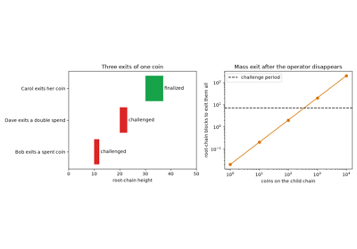
Plasma: child chains secured by exit games (Poon and Buterin, 2017)
2018 – eltoo: Channel Updates without Penalties#
Lightning’s penalty punishes an honest mistake as hard as theft. Publishing a stale backup, for example, loses the whole balance. eltoo replaces punishment with replacement. It works like a shared document where only the newest saved version counts.
Each state is two transactions:
an update transaction, which may spend the funding output or any earlier update;
a settlement transaction, which pays out the balances after a delay.
A party publishes an old update.
Within the delay, the other party publishes a newer update that spends it.
Only the last update survives, and its settlement pays out.
Nobody needs to be punished. This needs two properties:
The latest update must be able to spend whichever earlier update appears. A normal signature cannot do this, since it commits to the exact output spent. Updates are therefore signed with
SIGHASH_NOINPUT. This flag tells the signature to omit the spent output from what it covers.An old update must not be able to spend a newer one. So each update output requires the spending transaction’s lock time to exceed its own state number, and update
mcarries lock timem:
In words, a later state can always replace an earlier one, and never the reverse.
Implementation: blockchainkit.channels.systems.eltoo.EltooChannel,
whose update outputs are Script with both branches checked by
verify_script(). A signature over a
message without the spent output stands in for SIGHASH_NOINPUT
(BIP 118, not yet active on Bitcoin), and the settlement delay is checked
with OP_CHECKLOCKTIMEVERIFY against the update’s age.
References: C. Decker, R. Russell and O. Osuntokun, eltoo: a simple layer2 protocol for Bitcoin, white paper (2018).
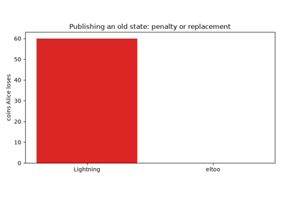
eltoo: channel updates without penalties (Decker, Russell and Osuntokun, 2018)
2018 – OmniLedger and Sharding#
Validators are the nodes that vote on which blocks to accept. Sharding splits them into groups, called shards. Each shard handles its own part of the transactions, like a dict split across several servers by key. Its group of validators is its committee. This multiplies throughput, but each shard is only as strong as its own committee.
At the start of every epoch, a fixed period of time, OmniLedger reshuffles validators into shards.
The shuffle uses unbiasable randomness (RandHound): a random value that no group of participants can steer. So an adversary with a fraction of all validators cannot gather them in one shard.
Each committee runs Byzantine agreement, a voting protocol that reaches a decision even if some members lie or crash.
Byzantine agreement fails once a third or more of a committee’s members are
malicious. A committee of m drawn at random from N validators,
M of them malicious, reaches that point with the hypergeometric
probability
which falls exponentially with m while \(M/N\) stays below a third.
This is the chance of dealing at least m/3 red cards when you deal
m cards from a deck of N with M red ones. For example, with
N = 1800 validators of whom a quarter are malicious, a committee of 100
fails with probability about 2%. A committee of 600 fails with probability
about \(10^{-8}\).
A payment whose inputs live on several shards must not succeed on some and fail on others. So OmniLedger uses Atomix:
Every input shard locks its input and says whether it accepts.
If all accepted, the output shard commits the payment.
Otherwise, every input is unlocked.
Implementation: blockchainkit.channels.systems.sharding.shard_failure_probability(),
assign_shards(),
compromised_epochs() and
atomix_transfer(). A seeded
shuffle stands in for RandHound, and shards’ acceptances are taken on
trust rather than as signed proofs from each committee.
References: E. Kokoris-Kogias, P. Jovanovic, L. Gasser, N. Gailly, E. Syta and B. Ford, OmniLedger: a secure, scale-out, decentralized ledger via sharding, IEEE Symposium on Security and Privacy (2018), 583–598. DOI.
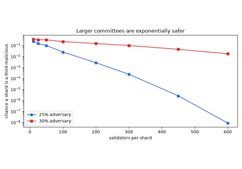
OmniLedger and sharding (Kokoris-Kogias et al., 2018)
2018 – zk-Rollups: Validity Proofs for Batched Transactions#
Plasma kept data off chain and paid for it with exit games. A rollup posts its transactions, compressed, to the chain, so anyone can rebuild its state. The state is every account’s balance. Its state root is one hash that fingerprints all of it.
Barry Whitehat’s roll_up and Buterin’s proposal of 2018 added a succinct proof. This is a short proof that the posted state root follows from the posted transactions. Checking it costs the same however many transactions it covers.
The rollup’s operator collects
ntransactions and applies them off chain.The operator posts the compressed transactions as calldata (data attached to an Ethereum transaction), together with the new state root and the proof.
The contract verifies the proof at a fixed cost \(G_{\text{verify}}\) and never re-executes the transactions.
The contract stores the new state root.
In a batch of n transactions of b bytes each, at 16 gas per byte of
calldata, the gas per transaction tends to the cost of its data:
The fixed verification cost is shared among the n transactions, and
21,000 gas is the base cost of an ordinary Ethereum transaction. For
example, if \(G_{\text{verify}} = 500{,}000\), then 1,000 transactions of
12 bytes cost \(500 + 192 = 692\) gas each, about 30 times less.
A sound proof system admits no proof of a false state root. So a batch is final, never to be undone, as soon as it is accepted, with no challenge period.
Implementation: blockchainkit.channels.systems.rollups.ZKRollup,
with batch_gas() and
state_root(). There is no
proof system: a ValidityProof
states what it proves, and verification re-executes the batch, standing in
for a SNARK verifier. Invalid transactions are skipped, as rollups do.
References: Barry Whitehat, roll_up, github.com/barryWhiteHat/roll_up (2018); V. Buterin, On-chain scaling to potentially ~500 tx/sec through mass tx validation, ethresear.ch (September 2018).
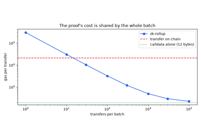
zk-rollups: validity proofs for batched transactions (2018)
2018 – Al-Bassam, Sonnino and Buterin: Fraud Proofs and Data-Availability Sampling#
A fraud proof is a short proof that a block is invalid, such as a pointer to one bad transaction. It lets a light client reject an invalid block once an honest full node objects. But this works only if the block’s data is available. A producer can publish a header and withhold the data, and then nobody can prove fraud.
Al-Bassam, Sonnino and Buterin make withholding easy to catch. The block’s data is cut into pieces, its shares.
The producer extends the data with a Reed-Solomon code, so that any half of the shares rebuilds the block.
The producer commits to all the shares, with a Merkle root in the header.
Each light client asks for
sshares chosen at random, and checks each one against the commitment.If every requested share arrives, the client accepts the block as available.
Withholding a few shares then hides nothing. To keep any data out of reach,
the producer must withhold a fraction \(f > 1/2\) of the shares. Each
share a client samples at random is then missing with probability f, so
a client that samples s of them notices with probability
The chance that all s samples miss the withheld shares is
\((1 - f)^s\), which is below \(2^{-s}\). With 30 samples, it is
below one in a billion.
The scheme closes two more gaps:
A producer could instead publish shares that are not a valid codeword, so that different halves rebuild different blocks. Any node that rebuilds the data catches this with an encoding fraud proof.
Once enough clients’ samples are published, together they rebuild the block.
Implementation: blockchainkit.channels.systems.data_availability.extend(),
simulate_sampling(),
encoding_fraud_proof()
and verify_encoding_fraud_proof(),
on reed_solomon and
MerkleTree. The code is
one-dimensional, so a fraud proof holds k + 1 shares rather than the
paper’s single row of a two-dimensional square.
References: M. Al-Bassam, A. Sonnino and V. Buterin, Fraud and data availability proofs: maximising light client security and scaling blockchains with dishonest majorities, arXiv:1809.09044 (2018).
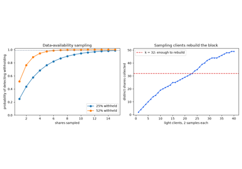
Fraud proofs and data-availability sampling (Al-Bassam, Sonnino and Buterin, 2018)
2019 – Optimistic Rollups and Fraud-Proof Challenge Windows#
Validity proofs were expensive to generate for general computation. An optimistic rollup, as Adler and Quintyne-Collins proposed in 2019, treats every batch as innocent until proven guilty.
The rollup posts batches and state roots without proofs.
A challenge window opens, during which anyone can prove fraud.
If the window passes with no fraud proven, the root becomes final.
Re-executing a whole batch on chain to settle a dispute would cost what the rollup saves. So the dispute is narrowed by bisection, as in Arbitrum. This is binary search on the batch:
The asserter, who posted the root, and the challenger agree on the state before the batch and disagree on the state after it.
The asserter posts the state root at the midpoint.
The challenger says which half it disputes.
That half is split in turn, and so on.
When they disagree about one transaction, the chain re-executes it and decides who was right.
A batch of n transactions takes
Each round halves the disputed range. A batch of a million transactions needs only 20 rounds. The trade-offs are:
Any one honest watcher can win the game, so one suffices.
The price is that withdrawals wait for the window.
Implementation: blockchainkit.channels.systems.rollups.OptimisticRollup
and bisect(). The bisection
game runs in one call rather than as alternating transactions, and the
challenger’s own bond and the censorship of challenges are not modelled.
References: J. Adler and M. Quintyne-Collins, Building scalable decentralized payment systems, arXiv:1904.06441 (2019); H. Kalodner, S. Goldfeder, X. Chen, S. M. Weinberg and E. W. Felten, Arbitrum: scalable, private smart contracts, 27th USENIX Security Symposium (2018).
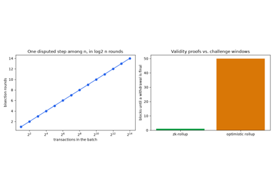
Optimistic rollups and fraud-proof challenge windows (2019)
2019 – Watchtowers and PISA: Guarding Offline Channel Parties#
A Lightning party is safe only while it watches the chain. A revoked commitment must be answered within its delay. A watchtower is a service that watches on the party’s behalf. Each transaction has an identifier, its hash. Dryja’s 2016 design uses it as both a search key and an encryption key.
After each update, the party gives the tower half the revoked commitment’s transaction identifier, as a hint.
The party also gives a presigned penalty transaction, encrypted under the whole identifier.
The tower watches for a transaction whose identifier starts with the hint.
When one appears, the tower uses its full identifier to decrypt the penalty, and publishes it.
This protects the party in two ways:
Until a cheat appears, the tower cannot decrypt the penalty, and learns nothing about the channel.
The tower can publish only a penalty that pays the party.
PISA made towers accountable:
A tower signs a receipt for each appointment and locks a deposit.
If the revoked commitment named in the receipt was published and its funds were taken by the cheater, the party claims the deposit.
A party that checks the chain every T blocks, with a delay of d
blocks, misses a cheat published at a random time with probability
\(1 - d/T\) when \(d < T\), and loses only if the tower also fails:
The party catches a cheat itself only if one of its checks falls within the
d blocks after it. If \(d \ge T\) it always does, and the first
factor is 0.
Implementation: blockchainkit.channels.systems.watchtowers.Watchtower,
make_appointment(),
verify_receipt() and
tower_liable(), guarding a
LightningChannel. The
blob is encrypted with a SHA-256 keystream rather than an authenticated
cipher, and PISA’s recourse is a function rather than its arbitration
contract for general state channels.
References: P. McCorry, S. Bakshi, I. Bentov, S. Meiklejohn and A. Miller, Pisa: arbitration outsourcing for state channels, ACM Conference on Advances in Financial Technologies (AFT 2019). DOI; T. Dryja, Unlinkable outsourced channel monitoring, Scaling Bitcoin, Milan (2016).
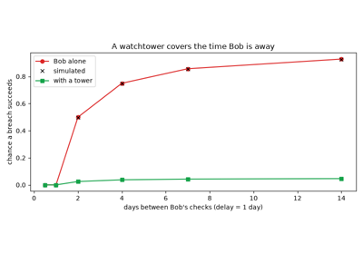
Watchtowers and PISA: guarding offline channel parties (McCorry et al., 2019)
2019 – Balance Probing and Payment Privacy in Lightning#
Lightning announces each channel’s capacity but hides how it is split between the two sides. The split reveals how much each side has paid. Herrera-Joancomartí and co-authors showed that anyone with a channel can learn it.
The prober routes a payment through the target channel. It uses a payment hash nobody can claim, because nobody knows its preimage.
If the channel cannot forward the amount, the error comes from that hop.
If it can, the payment fails at the recipient, with a different error.
Either way no money moves. Each probe answers one question: is the balance at least the amount?
The prober halves the range of possible balances each time, as in a binary search.
A binary search finds the balance of a channel of capacity \(C\), one of \(C + 1\) values, exactly in
For a channel of \(2^{24} - 1\) satoshis, that is 24 probes. Repeated over time, probing reveals payments themselves: a change in the balance between two probes shows a payment went through.
Implementation: blockchainkit.channels.systems.probing.probe_balance()
over ChannelNetwork, which
routes hash time-locked payments over a
Graph, with fees and
expiries computed hop by hop from the recipient. Errors return in the
clear; the deployed protocol wraps them in onion encryption, which hides
nothing from the sender, who is the prober.
References: J. Herrera-Joancomartí, G. Navarro-Arribas, A. Ranchal-Pedrosa, C. Pérez-Solà and J. Garcia-Alfaro, On the difficulty of hiding the balance of Lightning Network channels, ACM Asia Conference on Computer and Communications Security (AsiaCCS 2019). DOI.
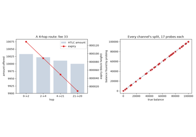
Balance probing and payment privacy in Lightning (Herrera-Joancomartí et al., 2019)
2022 – Bridge Failures: the Ronin and Wormhole Exploits#
Most bridges do not verify the other chain at all. Instead a committee
signs withdrawals, often as a t-of-n scheme: any t of n keys
suffice, like a safe that opens with any 5 of 9 keys. Such a bridge is only
as safe as its keys and the code that checks their signatures. A
wrapped token is one the bridge mints on one chain to stand for coins it
holds on another.
In February 2022, Wormhole failed through its code:
Wormhole’s Solana program accepted an account supplied by the caller as evidence that the guardians’ signatures had been checked.
An attacker supplied a forged one, and so skipped the check.
The attacker minted 120,000 wrapped ether.
In March, Ronin failed through its keys:
Ronin released funds on 5 of 9 validator signatures.
One company ran four validators, and still held permission to sign for a fifth.
Breaking into that one company yielded all five signatures.
Ronin lost 173,600 ether and 25.5 million USDC, a token pegged to the US dollar.
For n independent keys each compromised with probability p, a
t-of-n bridge falls with
the chance that at least t keys are stolen. This is tiny for small p
and large t. With p = 0.01, a 5-of-9 bridge falls with probability
about \(10^{-8}\). But the formula assumes independence:
Keys held by one party are not independent. They fall together.
Ronin’s five signatures took a single breach.
Implementation: blockchainkit.channels.systems.bridges.ValidatorBridge,
GuardianVerifier,
WormholeBridge and
ForgedVerifier, contracts on
World. Solana’s accounts
become a caller-supplied verifier contract, and minting and redeeming
wrapped ether happen in one contract instead of on two chains.
References: Ronin Network, Community alert: Ronin validators compromised (29 March 2022); Wormhole, Wormhole incident report (February 2022); S.-S. Lee, A. Murashkin, M. Derka and J. Gorzny, SoK: not quite water under the bridge: review of cross-chain bridge hacks, arXiv:2210.16209 (2022).
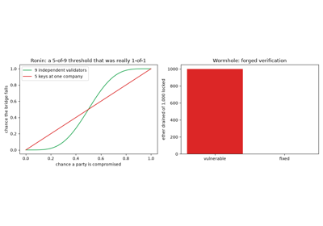
Bridge failures: the Ronin and Wormhole exploits (2022)